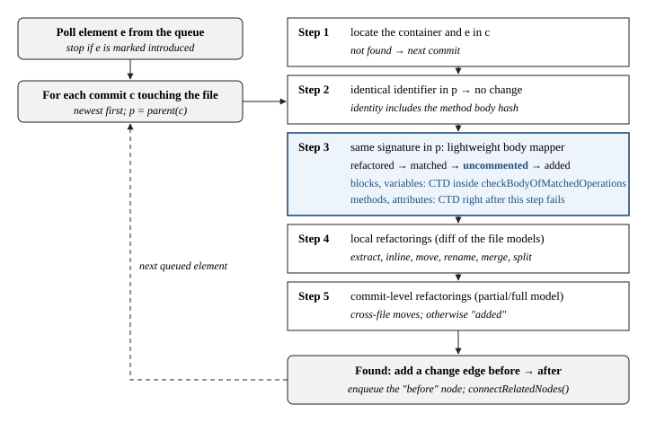
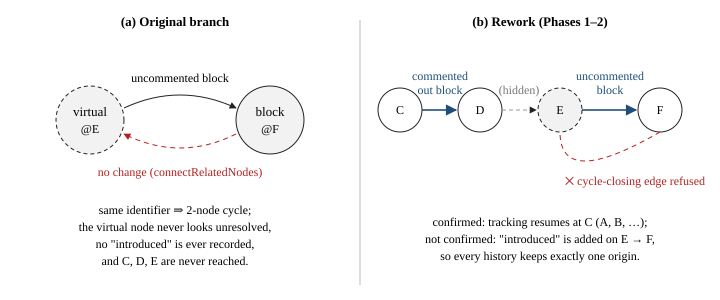
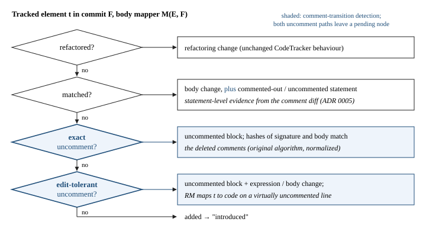
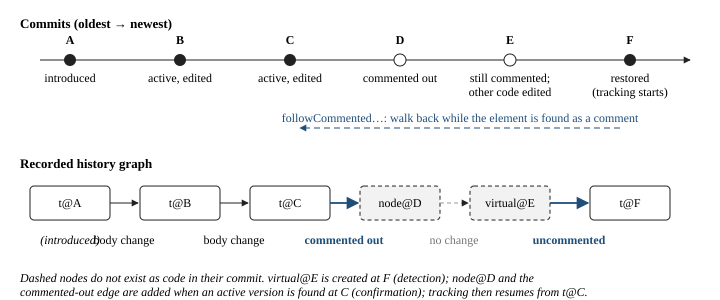
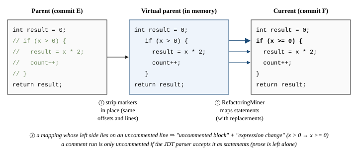
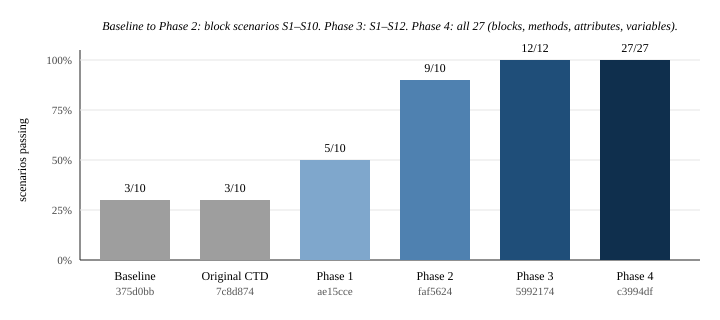

Tracking Code Elements Through Comment-Out and Restore Cycles
for Blocks, Methods, Attributes and Variables
Follow-up report on the CodeTracker comment transition detection work
November 2026
Abstract
Developers frequently disable code by commenting it out and restore it later. CodeTracker, a refactoring-aware tool that reconstructs the commit history of individual code elements, treats such a restored element as newly introduced, so the history before the comment-out is lost. A previous report proposed and prototyped Comment Transition Detection (CTD) for block tracking. This report analyses that prototype and extends it. A controlled scenario suite shows that the prototype's deliberate reconnection heuristic, a virtual parent that carries the current method's identity, links a restored block to its earlier history when the enclosing method body is otherwise unchanged, but never records the commit that commented the block out; when the method changed elsewhere, the restored history ended without an origin. The suite also shows that formatting differences and edits made during the restore prevented detection. We present four contributions: (i) a guarantee that every history keeps exactly one origin, together with a cycle-safe linking of history fragments; (ii) commented-state tracking, which follows a restored element back through the commits in which it existed only as a comment and records the commit that commented it out; (iii) edit-tolerant detection based on a virtual parent, a line-preserving uncommented copy of the parent version that RefactoringMiner maps against the current version; and (iv) the generalization of the approach from blocks to methods, attributes and variables, realising the method-level algorithm proposed in the first report. On a suite of 27 fixture-based scenarios, the reworked implementation passes all 27, compared with 3 of 10 block scenarios for both the original tool and the prototype. On a new oracle of 42 hand-validated comment-out and restore histories from javaparser, elasticsearch and checkstyle, it reaches 97.1% precision and 88.3% recall (98.3% and 80.6% for the comment-transition changes alone), and the 3,376 published CodeTracker oracle histories show no regression.
Keywords: software evolution, change history, code tracking, commented-out code, refactoring-aware analysis, CodeTracker, RefactoringMiner
Commenting out code is one of the most common ways developers temporarily disable functionality, during debugging, experimentation or feature deactivation, and restore it later. Pham and Yang found commented-out code to be common in open-source projects [6]. For history-reconstruction tools this practice is a blind spot. CodeTracker [1, 3] builds the commit change history of a method, variable, attribute or block by walking backwards through the commits that touched its file. When the element appears in a commit but cannot be found in that commit's parent, it is reported as introduced and tracking stops. A restored element looks exactly like that, so everything before its restoration is cut off from its history.
This problem was raised in our first report (Enhancing CodeTracker Accuracy, April 2026 [4]), which proposed Algorithm 3 for restored methods. The second report (Comment Transition Detection in Block Tracking, May 2026 [5]) implemented CTD for blocks. That implementation introduced three change types (Uncommented Block, Uncommented Statement, Commented-Out Statement), a strict hash-based detection of restored blocks, and a virtual parent block that bridges a restored block to its earlier history. Its own limitations section listed open problems:
else/catch/finally restorations are only partly supported;This report continues that work. We first analyse the prototype systematically with a fixture-based scenario suite and identify the conditions under which its history-preservation heuristic holds (Section 3). We then present a reworked design (Section 4) and its generalization to all four element kinds that CodeTracker tracks at member level (Section 5). Our contributions are:
CodeTracker identifies an element by a version-independent identifier. For methods, the identifier includes the signature, the documentation and a hash of the body. Blocks and local variables include the identifier of their enclosing method, and therefore depend on that method's body hash. Attributes are identified by their class, modifiers, visibility, name, type and annotations; the initializer is not part of the identifier. The tracking loop (Figure 1) takes an element from a queue and visits the commits that touched its file, newest first. For each commit it tries five steps in turn:
When a step succeeds, a change edge is added between the parent ("before") and current ("after") versions of the element. The "before" node is queued, and connectRelatedNodes links history fragments whose identifiers coincide.

Figure 1: The backward tracking loop of CodeTracker. Shaded: where comment-transition detection (CTD) is integrated. Blocks and variables use the body mapper of Step 3. Methods and attributes are checked right after their Step 3 / Step 2 fails, before the more expensive Steps 4 and 5.
The body mapper of RefactoringMiner [2] (version 3.1.6 here) provides statement mappings with replacements, the non-mapped leaves and composite statements of each side, added and deleted comments (UMLCommentListDiff), matched and added variable declarations, and the refactorings found inside the body. RefactoringMiner has no notion of a comment that contains code. Commenting out a statement appears as "statement deleted, comment added". In a probe, its UMLComment.isCommentedCode() flag was true only for lone closing braces, so it cannot be used to recognise commented-out code.
To measure the prototype independently of real-world noise, we built an executable specification before changing any logic. Each scenario creates a throwaway Git repository with JGit, one labelled commit at a time (A, B, C, …), tracks one element from the last commit, and compares the history with the target behaviour. The comparison works per commit label, using keywords of change titles (for example commented out, uncommented), so it does not depend on the final enum names. Every scenario also checks three invariants:
Scenario S1 reproduces the evolution of Figure 9 of the first report: introduced (A), edited (B, C), commented out (D), other code edited while still commented (E), restored (F). The other scenarios vary the comment style, the formatting, the edits made during the restore, and add negative controls.
Table 1 summarises the defects found by inspecting the code and confirmed by the scenarios. The most consequential one concerns history continuity. The prototype builds the virtual parent block from the current method on purpose, so its identifier carries the current method's body hash. This is a deliberate reconnection heuristic: the backward loop skips older commits until it reaches one whose method body equals the current one, which is the last active version of the block. When nothing else in the method changes during the commented period (S2, S6), the restored block is linked to its earlier history as intended, down to its true origin.
The heuristic has two limits. First, the commit that commented the block out is never visited, because its method body differs from the current one; the history is continuous, but commented out is never recorded. Second, the reconnection needs a byte-identical method body. If any other line of the method changes during the commented period or in the restore commit (S1), no older version matches and the history ends with no origin at all, which is worse than the original tool's "introduced at F". In that case, because CodeTracker's block tracker does not mark its start node as such, connectRelatedNodes treats the restored block as an open fragment end and links it back to its own virtual parent, which shares its identifier: a two-node cycle (Figure 2a). The prototype's case study used a method whose body was otherwise unchanged, the case the heuristic was designed for, so these limits did not show up there. Real restorations often change the method elsewhere; for example, javaparser commit fc0e703 restored a block while rewriting much of the enclosing method.
| Defect | Sev. | Evidence | Resolved in |
|---|---|---|---|
| Limits of the deliberate reconnection heuristic (virtual node with the current body hash): it reconnects only when the rest of the method is unchanged; otherwise the restored block loses its origin (2-node cycle). A block first written as a comment also ends without an origin | H | S1, S7 | Phase 1 |
Exact hash matching defeated by formatting (if(x>0){ vs if (x > 0) {) and by edits made while uncommenting | M | S4, S5, S11 | Phases 1, 3 |
| A statement-level transition replaced body change, hiding other edits in the same commit | M | S10 | Phase 1 |
Block keywords matched by prefix (double, format(, ifPresent( counted as do, for, if) | M | unit tests | Phase 1 |
Single trivial comment lines (return;, }) counted as evidence | M | unit tests | Phase 1 |
| The commit that commented the block out is never reported | M | S1, S2, S4, S6 | Phase 2 |
| Only blocks are covered; methods (first report, Algorithm 3), attributes and variables are not | M | M1–V5 | Phase 4 |
| Local-files trackers, used by the oracle tests, contain none of the CTD hooks | M | code inspection | Phases 3–4 |
| Stale RefactoringMiner version (did not compile); wildcard imports; dead code | L | build | Phases 0–1 |

Figure 2: (a) In the prototype, when the method changed elsewhere during the commented period, no older version matches the virtual parent node, which shares the restored block's identifier; connectRelatedNodes links the two into a cycle and the history never receives an origin. (b) In the rework, a cycle-closing edge is refused. The restored element is either linked to its last active version through the commented-out commit, or closed with introduced.
The rework keeps the prototype's architecture and integration points. Figure 3 shows the decision sequence for a tracked element whose container has the same signature in the parent. The prototype's exact detection is kept as the first, cheapest check. The edit-tolerant detection of Section 4.4 runs only when the exact check fails and the element would otherwise be reported as added. Both detectors leave a pending virtual node. That node is later either confirmed by the commented-state search (Section 4.3) or closed with an origin (Section 4.2).

Figure 3: Decision sequence in checkBodyOfMatchedOperations for blocks (variables are analogous). Comment transitions inside a matched element are recorded in addition to the body change.
The exact detector (Algorithm 1) keeps the prototype's strategy:
Phase 1 made four changes to it:
| Algorithm 1: ExactUncommentDetection(M, t), the prototype's detector with normalized hashing | |
| Input: body mapper M between parent E and current F; tracked block identity t | |
| 1 | D ← M.deletedComments; if D = ∅ then return false |
| 2 | S ← { codeHash(s) | s ∈ RebuildBlockSignatures(D) } ▷ joins signatures spread over several comment lines |
| 3 | H ← { codeHash(ℓ) | ℓ a line of D } |
| 4 | for each composite c ∈ M.nonMappedInnerNodes(F) do |
| 5 | if codeHash(c.signature) ∉ S or Block(c, F) ≠ t then continue |
| 6 | if ∃ statement s nested in c: codeHash(s) ∉ H ∪ mapped(M, c) then continue ▷ strict continuity |
| 7 | v ← Block(c, container(F), version E) ▷ virtual parent; same identifier as c@F |
| 8 | addEdge(v → c@F, uncommented block); MarkPending(v, form = c); enqueue(v) |
| 9 | return true |
Origin guarantee. A pending node that is never confirmed is closed after the tracking loop. An introduced change is added on its uncommented edge, so the history keeps exactly one origin (Algorithm 2, lines 1–3). This is the "pending is discarded" case of the first report's Algorithm 3.
Cycle-safe linking. connectRelatedNodes may link a fragment's open end (leaf) to another fragment's start (root) with the same identifier. The rework refuses such a link when the root already reaches the leaf, because the link would close a cycle (Algorithm 2, lines 4–7). A cycle is never a valid history, so this guard only removes impossible edges. It lives in the ChangeHistory class that all trackers share.
| Algorithm 2: Origin guarantee and cycle-safe linking | |
| 1 | procedure ClosePending() ▷ called once, after the tracking loop |
| 2 | for each pending virtual node v with uncommented successor a do |
| 3 | if predecessors(v) = ∅ then addEdge(v → a, introduced) ▷ no earlier active version |
| 4 | procedure ConnectRelatedNodes() |
| 5 | for each leaf ℓ, root r with id(ℓ) = id(r) and version(ℓ) ≠ version(r) do |
| 6 | if ℓ ∈ reachable(r) then continue ▷ would close a cycle |
| 7 | addEdge(ℓ → r, no change) |
The first report's Algorithm 3 marks a restoration as pending and confirms it once an active version is found further back. We realise this with a dedicated backward search (Algorithm 3, Figure 4). When the tracking queue polls a pending virtual node, the generic loop is bypassed. The search walks back through the commits that touched the file, starting just before the restore commit, and handles each commit in one of three ways:
The search keeps the element's commented form, meaning how it looked while it was a comment, so it also works when the restore changed the element (Section 4.4). An active block found by signature alone must share at least half of the commented form's leaf statements, and the best such block wins. Without this rule, an unrelated try or else block with the same signature could be followed instead (Phase 7).
| Algorithm 3: FollowCommented(v, commits), commented-state tracking (generic over element kinds) | |
| Input: pending virtual node v (version E) with restored element a@F and commented form φ; file commits newest first | |
| 1 | d ← version(v) ▷ newest commit known to contain the commented form |
| 2 | for each commit c older than F in commits do |
| 3 | K ← container of a in c, matched by signature; if K = ⊥ then return ▷ stays pending |
| 4 | if FindActive(K, φ) = x ≠ ⊥ then |
| 5 | n ← (d = E) ? v : node of a at d, linked n → v with no change |
| 6 | addEdge(x → n, commented out); unmark v; enqueue(x); return |
| 7 | if not FoundAsComment(K, φ) then return ▷ first written as a comment |
| 8 | mark c analysed; d ← c |

Figure 4: Commented-state tracking on the evolution of the first report's Figure 9. The virtual node at E is created when the restore is detected at F. The search walks back over E and D (still comments) and finds the active version at C. It then records commented out on C → D and resumes normal tracking from C.
Instead of matching comment text against code with hand-written similarity rules, we let RefactoringMiner do the matching it was built for (Algorithm 4, Figure 5):
// lines, or one /* … */ comment. Javadoc is skipped.;, { or } of a line is cut (for example } NOCOMMIT fix this), and up to three prose lines are trimmed at either end of the run; the parse is retried, fewest lines dropped first. Code-like lines are never trimmed, so a commented method cannot shrink to a lone statement (Phase 7).| Algorithm 4: VirtualUncommentDetection(M, t), edit-tolerant detection | |
| 1 | if t is matched in M or M.deletedComments = ∅ then return false ▷ gate: no cost for ordinary histories |
| 2 | src ← content of the parent file ▷ Git or cached commits (CommitFileSource) |
| 3 | for each run R of M.deletedComments do |
| 4 | src′ ← src with the markers of R replaced by spaces ▷ offsets and lines unchanged |
| 5 | if JdtParses(region of R in src′, kind) then src ← src′; U ← U ∪ lines(R) |
| 6 | if U = ∅ then return false |
| 7 | K′ ← container in Parse(src) with the parent's signature; M′ ← BodyMapper(K′, container(F)) |
| 8 | if ∃ mapping (φ, t@F) ∈ M′ with startLine(φ) ∈ U then |
| 9 | prepare changes: uncommented ∪ differences(φ, t@F) ▷ built before the history is touched |
| 10 | record them on v → t@F; MarkPending(v, form = φ); return true |

Figure 5: The virtual parent. Comment markers are replaced in place, the uncommented text is re-parsed, and RefactoringMiner maps the virtual parent against the current version. The changed condition (x > 0 → x >= 0) becomes an expression change on the uncommented edge.
The scheme of Section 4 (detect, mark pending, follow back, confirm or close) is instantiated for each element kind (Table 2). The kinds differ in four ways:
// } is therefore credited to the right member. A run counts as deleted when it lost at least one of its lines (Phase 7).| Element | Comments | Parse as | Detection hook | Commented form matched by | Extra changes at restore |
|---|---|---|---|---|---|
| Block | method body | statements | Step 3, before added | kind + signature (body preferred) | expression, body |
| Method | class body | class members | after Step 3 fails | signature | body |
| Attribute | class body | class members | after Step 2 fails | identity (no initializer) | initializer |
| Variable | method body | statements | Step 3, before added | name + type | rename, type |
Ten comment-related change types are available (Table 3). Three come from the prototype and seven are new. REST output and the oracle comparison look change types up by their title, so the new types need no further mapping.
| Element | Restored | Commented out |
|---|---|---|
| Block (whole) | uncommented block ✱ | commented out block |
| Statement inside a matched block | uncommented statement ✱ | commented out statement ✱ |
| Method | uncommented method | commented out method |
| Attribute | uncommented attribute | commented out attribute |
| Variable | uncommented variable | commented out variable |
Each tracker exists in up to three copies of its tracking loop: track() and blame() on Git, and a third track() in the *WithLocalFiles variant, which reads cached commits and is the variant used by the oracle tests. The comment-transition logic lives in each tracker's change-history class. The loops only contain three small hooks:
A CommitFileSource interface reads a file at a commit, or at its parent, from Git or from the cache. This lets the virtual parent and the backward search work in both variants. In total, eleven loops are wired: three each for blocks, methods and attributes, and two for variables, whose tracker has no blame() (3 + 3 + 3 + 2 = 11).
getMatchedVariables() does not list every mapped declaration pair, so the variable detector also inspects the statement mappings.RQ1. Does the rework produce the target histories for comment-out and restore cycles, including edits made during the restore? RQ2. Does it avoid false comment transitions? RQ3. Does it leave histories of ordinary code unchanged? RQ4. How precise and complete is it on real comment-out and restore histories?
Table 4 lists the scenarios and their outcomes. "Baseline" is CodeTracker without CTD (the prototype branch's merge-base with master, 375d0bb). "Prototype" is 7c8d874. "Rework" is c3994df, the end of Phase 4; all 27 scenarios still pass after Phase 7 (a788373). The scenarios for methods, attributes and variables were written in Phase 4. Their "Baseline" column was measured on the rework branch just before each tracker's hooks were added. At that point those trackers still behaved like the original CodeTracker, because the prototype only changed the block tracker. Figure 6 shows the progression across the phases.
| # | Scenario | Baseline | Prototype | Rework |
|---|---|---|---|---|
| S1 | Block commented out, method edited while commented, restored | ✗ intro at F | ✗ no origin | ✓ |
| S2 | Same, nothing else edited | ✗ intro at F | ✗ D missing | ✓ |
| S3 | Statement inside the block commented out and restored | ✗ body changes only | ✓ | ✓ |
| S4 | Commented code formatted differently (//if(x>0){) | ✗ intro at F | ✗ intro at F | ✓ |
| S5 | Condition edited during restore | ✗ intro at F | ✗ intro at F | ✓ |
| S6 | Block commented with /* … */ | ✗ intro at F | ✗ D missing | ✓ |
| S7 | Block first written as a comment | ✓ | ✗ no origin | ✓ |
| S8 | Negative: prose comment removed with a real edit | ✓ | ✓ | ✓ |
| S9 | Negative: commented statement removed in a sibling block | ✓ | ✓ | ✓ |
| S10 | Statement uncommented together with a real edit | ✗ no transition | ✗ edit hidden | ✓ |
| S11 | Block body edited during restore | n/a | n/a | ✓ |
| S12 | Negative: unrelated commented loop deleted while a block is added | n/a | n/a | ✓ |
| M1–M3 | Method restored (line comment / block comment / body edited) | ✗ intro at F | n/a | ✓ (3/3) |
| M4, M5 | Method first written as comment; negative control | ✓ | n/a | ✓ (2/2) |
| F1–F3 | Field restored (line / block comment / initializer edited) | ✗ intro at F | n/a | ✓ (3/3) |
| F4, F5 | Field first written as comment; negative control | ✓ | n/a | ✓ (2/2) |
| V1–V3 | Variable restored (line / block comment / type edited) | ✗ intro at F | n/a | ✓ (3/3) |
| V4, V5 | Variable first written as comment; negative control | ✓ | n/a | ✓ (2/2) |

Figure 6: Share of scenarios that produce the target history, per development stage.
RQ1. The rework produces the target history in all 27 scenarios. These include the method-level evolution of the first report's Figure 9, and restores that changed a condition (S5), a statement (S11), a method body (M3), an initializer (F3) or a variable type (V3). RQ2. No comment transition was reported in any of the seven negative or origin-only scenarios (S7–S9, S12, M4/M5, F4/F5, V4/V5). The unit tests further check that prose and fragments are rejected by the parser filter, and that identifiers which merely start with a keyword (double, format() are not taken for blocks.
The CodeTracker oracle comprises 1,280 block, 200 method, 1,416 variable and 480 attribute histories from open-source projects, read from cached commits. We ran it on the Phase 0 commit (the prototype plus the build fix), on the end of Phase 4, and again after Phase 7, and compared the true positive, false positive and false negative counts history by history (Table 5).
| Oracle | Prototype (81dcf47) | Phase 4 (c3994df) | Phase 7 (a788373) |
|---|---|---|---|
| Block | 1269 / 1280 | 1280 / 1280 | 1280 / 1280 |
| Method | 200 / 200 | 199 / 200 * | 200 / 200 |
| Variable | 1416 / 1416 | 1416 / 1416 | 1416 / 1416 |
| Attribute | 480 / 480 | 480 / 480 | 480 / 480 |
RQ3. The rework causes no regression in any published oracle. The prototype misses 11 block histories (javaparser SourceFileInfoExtractor.solve and Difference.apply, and one checkstyle history). All 11 are false negatives with the same cause: the prototype replaced body change by a statement-level transition whenever one line of the block matched a deleted or added comment, and the oracle comparison filters those transition types out, so the expected body change disappears. The rework keeps body change and passes all 11. The one method "failure" marked * is a test-harness artifact: lucene-solr-Field-tokenStream.json exists both as a method and as an attribute history, the oracle tests key expected values by file name in shared maps, and whether it passes depends on the order in which the test classes load. The computed history is correct in both runs.
Two practical findings from preparing the runs: the committed pom.xml mixes JUnit 5.8.2 and 5.10.0, which makes every parameterized oracle test fail before running, so the runs use a temporary copy with aligned versions; and before this work the local-files trackers used by the oracle contained no CTD code at all, so earlier oracle numbers did not measure the prototype.
The published oracle contains almost no commented-out code, so it cannot measure detection. We therefore built a new oracle of 42 histories from javaparser, elasticsearch and checkstyle: 13 block, 14 method, 10 variable and 5 attribute histories. Candidates were mined from the projects' Git histories. Each expected history was validated commit by commit against Git (git log -L and the diffs), and the verdicts are kept with the oracle. The histories are tracked offline from cached commits, like the published oracle, and scored with the same rules: an expected change counts as found when the commit and the change type match.
| Project (histories) | TP | FP | FN | Precision | Recall |
|---|---|---|---|---|---|
| javaparser (13) | 52 | 3 | 12 | 94.5% | 81.2% |
| elasticsearch (20) | 118 | 3 | 9 | 97.5% | 92.9% |
| checkstyle (9) | 34 | 0 | 6 | 100% | 85.0% |
| All change types (42) | 204 | 6 | 27 | 97.1% | 88.3% |
| Comment transitions only (42) | 58 | 1 | 14 | 98.3% | 80.6% |
RQ4. The oracle also exposed the main real-world failure cause, which Phase 7 fixed (Section 4.4): developers leave a note above or inside commented-out code (for example // NORELEASE These need … or } NOCOMMIT fix this), which made the run unparseable, so the restoration was reported as introduced. On the first 27 histories (javaparser and elasticsearch), Phase 7 raised recall from 46.9% to 87.8% and precision from 85.2% to 96.3%; ten histories improved and none got worse. The remaining misses have known causes:
TokenTypes), which is not recorded;KibanaThreadPoolIT and SecurityActionFilter, javaparser LexicalPreservingPrinter).Body change: refinement or addition. The prototype reported a statement-level transition instead of a generic body change. Its change classes extend the body-change class, and their labels read "Body Change, Contains …". The rework records the transition in addition to the body change, so that other edits in the same commit stay visible and the oracle's expected body change entries are still produced. The first choice is more concise for readers; the second loses no information. The final choice is open.
Internal validity. The scenarios were written by the same people who wrote the implementation, and they are synthetic. They show that the mechanisms work; the real-project oracle (Section 6.4) measures precision and recall, but its 42 histories were also selected and validated by the authors, and they come from three projects. The blame() paths are exercised only by compilation and by the shared code, not by scenarios. All results were measured with RefactoringMiner 3.1.6. Upstream CodeTracker now builds against the development version of RefactoringMiner, and the mapping that the virtual parent relies on may differ there.
Construct validity. In the edit-tolerant path, "the same element" means "RefactoringMiner maps it". If RefactoringMiner maps a new element to unrelated commented-out code, a false restoration is reported. Scenarios S12, M5, F5 and V5 probe one such case each; on the real-project oracle, one of 59 reported comment transitions was false. Some labels are conventions: for example, a body change made inside a comment in the same commit that commented it out is expected at that commit.
Limitations.
if (…) { and its closing brace, rely on the exact detector alone.else/catch/finally fragments restored inside an existing block are not specifically supported.CodeTracker [1] reconstructs method and variable histories with refactoring awareness, and its block extension [3] tracks statements and blocks. CodeShovel [7] builds method-level histories with a different, language-agnostic approach. RefactoringMiner [2] detects refactorings and statement mappings and underlies CodeTracker. It records some commented and uncommented statements in its body mapper, but only for single-line comments and only when the statements remain unmapped [5]. Pham and Yang [6] studied commented-out code in open-source projects and proposed classifying comments as code or prose. Our JDT-based filter is a deliberately simple form of such a classifier: a comment run counts as code only if it parses without errors.
We analysed a prototype of comment transition detection for CodeTracker. Its deliberate history-preservation heuristic reconnects a restored block when the enclosing method is otherwise unchanged, but never records the commit that commented the block out, and when the method changed elsewhere the history was left without an origin. We reworked it into a scheme that guarantees an origin, follows a restored element back through its commented period to the commit that commented it out, and tolerates edits made during the restore by letting RefactoringMiner map a virtual parent. The scheme now covers blocks, methods, attributes and variables in all eleven tracking loops, and passes a suite of 27 scenarios that the original tool passed only in its trivial cases. On 42 real histories it reaches 97.1% precision and 88.3% recall, with no regression in the published oracle. Future work:
else/catch/finally restorations;The analysis, implementation and documentation of the rework were carried out with the assistance of an AI coding assistant (Claude Code, Anthropic), under the author's direction and review.
[1] M. Jodavi and N. Tsantalis. Accurate Method and Variable Tracking in Commit History. In Proc. 30th ACM Joint European Software Engineering Conference and Symposium on the Foundations of Software Engineering (ESEC/FSE 2022), pp. 183–195, 2022. doi:10.1145/3540250.3549079.
[2] N. Tsantalis, A. Ketkar and D. Dig. RefactoringMiner 2.0. IEEE Transactions on Software Engineering, 48(3):930–950, 2022. doi:10.1109/TSE.2020.3007722.
[3] M. T. Hasan, N. Tsantalis and P. Alikhanifard. Refactoring-aware Block Tracking in Commit History. IEEE Transactions on Software Engineering, 2024. doi:10.1109/TSE.2024.3484586.
[4] P. Sattarzadeh. Enhancing CodeTracker Accuracy. Technical report, April 2026.
[5] P. Sattarzadeh. Enhancing CodeTracker: Comment Transition Detection in Block Tracking. Technical report, May 2026.
[6] T. M. Pham and J. Yang. The Secret Life of Commented-Out Source Code. In Proc. 28th International Conference on Program Comprehension (ICPC 2020), pp. 308–318, 2020. doi:10.1145/3387904.3389289.
[7] F. Grund, S. A. Chowdhury, N. C. Bradley, B. Hall and R. Holmes. CodeShovel: Constructing Method-Level Source Code Histories. In Proc. 43rd International Conference on Software Engineering (ICSE 2021), 2021.
| Phase | Commit | Content | Scenarios |
|---|---|---|---|
| 0 | 81dcf47 | Scenario suite, build fix (RefactoringMiner 3.1.6), analysis | 3/10 |
| 1 | ae15cce | Origin guarantee, cycle guard, normalized hashing, body change kept | 5/10 |
| 2 | faf5624 | Commented-state tracking for blocks | 9/10 |
| 3 | 5992174 | Virtual parent, edit tolerance, local-files trackers wired | 12/12 |
| 4a | 9737598 | Methods (first report, Algorithm 3) | 17/17 |
| 4b | c462408 | Attributes | 22/22 |
| 4c | c3994df | Variables | 27/27 |
| 5 | – | Published-oracle regression (no code change) | 27/27 |
| 6 | e86227a, e0cb15e | Real-project oracle: javaparser, elasticsearch | 27/27 |
| 7 | a788373 | Notes around commented code, comment alignment, stricter active-block match; oracle extended to 42 histories (checkstyle) | 27/27 |
| ADR | Decision | Status |
|---|---|---|
| 0001 | Record architecture decisions | Accepted |
| 0002 | Scenario tests with in-test fixture repositories | Accepted |
| 0003 | Build against RefactoringMiner 3.1.6 | Accepted |
| 0004 | An unresolved uncommented element ends the history with introduced | Proposed |
| 0005 | Comment transitions are recorded in addition to body change | Proposed |
| 0006 | Whitespace-insensitive matching and trivial-line filtering | Proposed |
| 0007 | The oracle regression runs once, after the last phase | Accepted |
| 0008 | Commented-state tracking by a direct backward search | Proposed |
| 0009 | Edit-tolerant detection with a virtual parent | Proposed |
| 0010 | Commented-out methods | Proposed |
| 0011 | Commented-out attributes | Proposed |
| 0012 | Commented-out variables | Proposed |
| 0013 | A real-project oracle for comment transitions | Proposed |
| 0014 | Tolerate notes around commented-out code | Proposed |